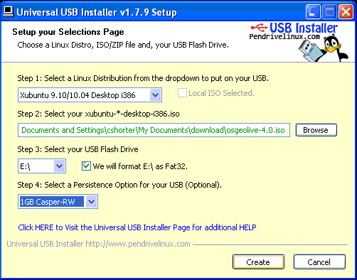

Creare un OSGeo-Live dispositivo USB avviabile¶
Qui verrà descritto come creare un OSGeo-Live dispositivo USB avviabile. Avviare da una dispositivo flash è più veloce di un DVD, e il dispositivo USB può essere configurato per immagazzinare dati tra le sessioni.
Sono stati trovati una serie di quirks and tricks al fine di creare con successo un dispositivo USB. È stato documentato quello che si conosce, ma ci sono più tricks e issues. Si controlli gli ultimi tips qui: http://wiki.osgeo.org/wiki/Live_GIS_Disc_Quick_Start_for_USB
Requisiti¶
- Un dispositivo USB da 4 GB, se si usa osgeo-live-mini (senza gli eseguibili Windows e Mac)
- Un dispositivo USB da 8 GB, se si usa osgeo-live (con gli eseguibili Windows e Mac)
- Un OSGeo-Live DVD o immagine ISO (scaricate da: http://live.osgeo.org/en/download.html)
Creare un dispositivo USB avviabile da Ubuntu¶
(Questo è il processo raccomandato per creare un USB, ed è anche applicabile alle derivate di Ubuntu, come Lubuntu o OSGeo-Live.)
Note
La versione di Ubuntu che si sta utilizzando, dev’essere la stessa o più nuova della versione di Lubuntu che si sta andando ad installare all’interno del dispositivo USB. Se installate OSGeo-Live 5.0/5.5 in un USB, dovrete avere un sistema operativo con Ubuntu 11.04 o più recente.
Scaricate osgeo-live o osgeo-live-mini nell’hard disk del vostro computer.
Inserire il dispositivo USB nel vostro computer.

Selezionare , o cercate Startup Disk Creator dal desktop di Unity.

Selezionare l’immagine ISO di osgeo-live o osgeo-live-mini che avete scaricato precedentemente.
Selezionare il dispositivo USB. Se avete spazio extra potete aggiustare lo slider per creare archiazione persistente sul drive USB (raccomandato). Per attivare questa opzione dovrete avere un penna USB da almeno 8GB.
Selezionare Make Startup Disk

Aspettare circa 20 minuti per la creazione del dispositivo USB.
Creare un dispositivo USB avviabile da Windows¶
Inserire il dispositivo USB nel vostro computer.
Scaricare ed eseguire Universal USB Installer da: http://www.pendrivelinux.com/universal-usb-installer-easy-as-1-2-3/

Accettare i termini della licenza.

Step 1: Distribuzione: Selezionare la distribuzione xubuntu i386 usata per l’immagine osgeo-live. (per OSGeo-Live 5.5, selezionare xubuntu 11.04 Desktop i386)
Step 2: Selezionare l’ultima immagine ISO osgeo-live che avete scaricato localmente. Nota: Bisognerà inserire manualmente il percorso al file ISO, poichè il pulsante Browse trova solo file ISO di Lubuntu.
Step 3: Selezionare il vostro dispositivo USB
Step 4: Selezionare “Persistence” se volete ricordare lo stato tra le sessioni.
Selezionare Create

Aspettare circa 20 minuti per la creazione del dispositivo USB.
Creare un dispositivo USB avviabile in sistemi operativi differenti¶
Step 1: Installare UNetbootin (downloaded from: http://unetbootin.sourceforge.net/).
Step 2: Inserire il dispositivo USB nel vostro computer.
Step 3: Avviare UNetbootin, selezionare Diskimage (il dispositivo USB è selezionato automaticamente).
Step 4: Selezionare il file ISO di OSGeo-Live.
Selezionare OK

Impostart l’ordine di boot del BIOS:¶
La maggior parte computers non sono impostati di default per avviare da dispositivi USB.
Per effettuare ciò, avviare il vostro computer, e digitare la key appropriata quando prompted per entrare dentro il BIOS (solitamente premendo <Delete> key o a <Function Key> o simile).
Selezionare l’avvio da dispositivo USB.
Nota, alcuni computers richiedono che il dispositivo USB sia inserito nel computer al fine di selezionarlo.
Nota, anche i dispositivi USB sono spesso elencati sotto gli hard disk invece che sotto i dispositivi rimuovibili.
Eseguire:¶
Eseguire secondo: Introduzione a OSGeo-Live
Problemi conosciuti:¶
- I computer Mac non avviano dai dispositivi USB, usare il LiveDVD
Vedere anche:¶
- Introduzione a OSGeo-Live
- OSGeo-Live Introduzione per Virtual Box
- Installare OSGeo-Live nel Hard Disk
- Se avete problemi, segnalateli in questa pagina wiki: http://wiki.osgeo.org/wiki/Live_GIS_Disc_Quick_Start_for_USB e discutetene nella mailing list: http://lists.osgeo.org/mailman/listinfo/live-demo
- Per maggiori opzioni di boot da USB, vedere http://pendrivelinux.com